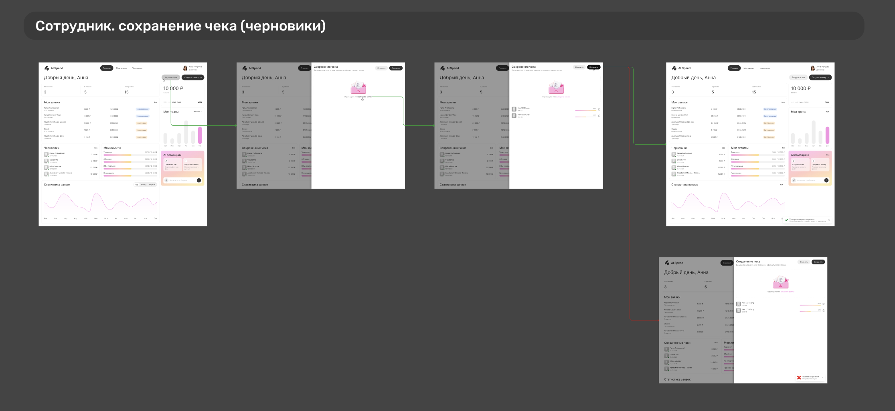
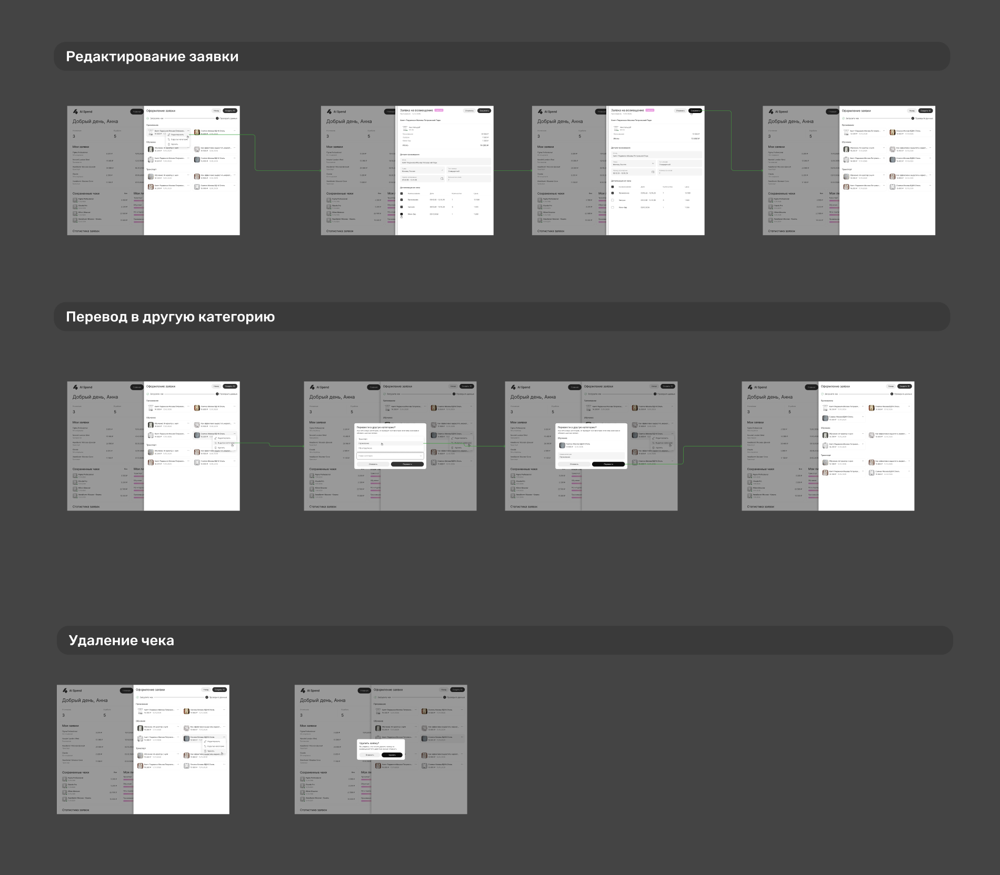
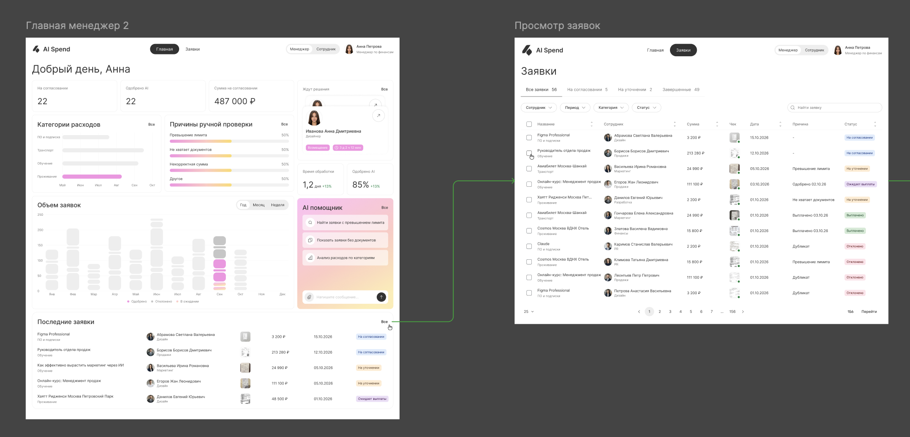
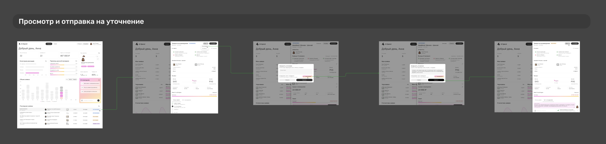
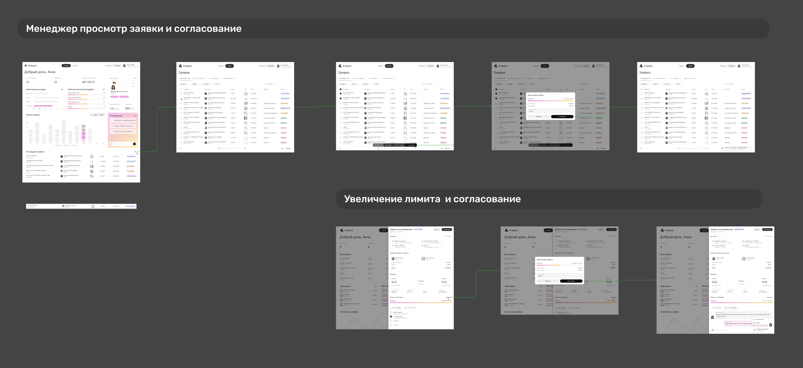
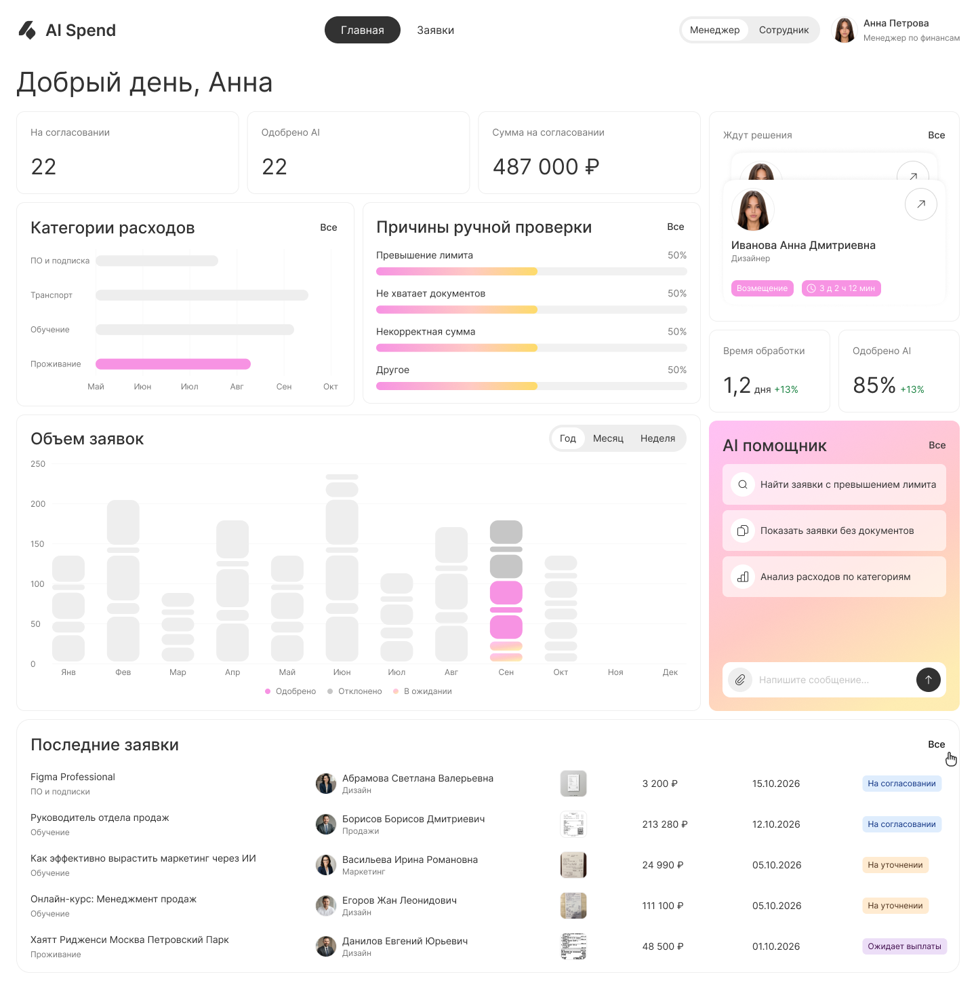
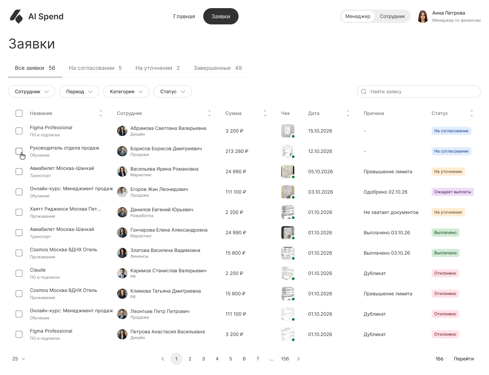
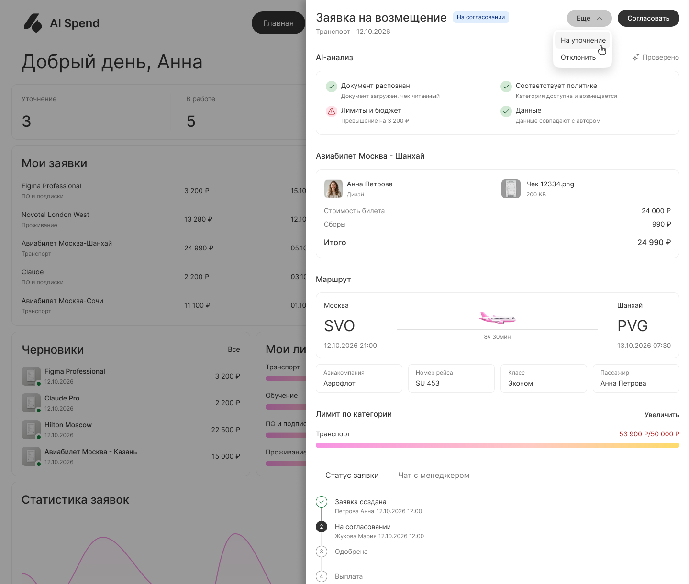

AI-платформа для управления расходами
Сотрудники регулярно тратят свои деньги на рабочие задачи: покупают инструменты, оплачивают подписки, бронируют билеты и жильё в командировках. Чтобы получить возмещение, нужно собрать подтверждающие документы, оформить заявку и пройти внутреннее согласование.
Процесс зависит от правил конкретной компании и обычно вовлекает нескольких человек: сотрудник собирает чеки и заполняет данные о расходе, менеджер проверяет обоснованность трат, а финансовая команда сверяет документы и суммы с внутренними регламентами.
Часть процесса живёт в специализированных системах, а часть остаётся за их пределами: в переписках, письмах и устных договорённостях.
Моя задача была разобраться в существующих сценариях и спроектировать единый опыт для всех участников процесса, отдав AI рутинные операции.
Сначала я предполагала, что главная боль сотрудников в долгом и неудобном оформлении заявок. Поэтому одна из первых гипотез была про ускорение этого процесса с помощью AI.
Но исследование показало: сама форма не всегда занимает много времени. Один из респондентов рассказал, что оформление заявки при собранных данных занимает одну-две минуты.
Сложности возникают на других этапах:
Сотрудник
Не всегда понимает, к какой категории отнести расход и какие данные необходимо указать.
Должен собрать чеки и подтверждающие документы.
Может не знать, допустим ли конкретный расход и какие ограничения действуют в компании.
Не всегда может самостоятельно повлиять на скорость обработки заявки.
Менеджер
Проверяет обоснованность расходов и соответствие внутренним правилам.
Проверяет документы, суммы и категории расходов.
Сверяет данные с внутренними правилами и бюджетами.
Уточняет информацию, если в заявке не хватает данных или документов.
Принимает решения по расходам, которые требуют дополнительного согласования.
Задача оказалась шире, чем автоматизация формы. Нужно было разобраться во всём жизненном цикле расхода и понять, на каких этапах AI действительно поможет.
Чтобы не строить решение на своих догадках, я провела исследование в несколько шагов: бенчмарк конкурентов, глубинные интервью, JTBD и CJM.
Так я посмотрела на процесс с разных сторон: что уже существует на рынке, как сотрудники и финансовые команды на деле работают с расходами и где спотыкаются.
Изучила четыре продукта: Expensify, Brex, SAP Concur и Ramp.
Смотрела дальше списка функций: на сценарии, структуру интерфейсов и то, как каждый продукт применяет AI в управлении расходами.
В рамках бенчмарка выделила:
Загрузку чеков, распознавание документов и извлечение данных.
Автоматическое заполнение и категоризацию расходов.
Проверку расходов на соответствие корпоративным политикам.
Работу с лимитами, бюджетами и исключениями.
Создание, отправку и согласование заявок.
Поиск финансовой информации и взаимодействие с AI на естественном языке.
Представление результатов автоматической проверки и передачу спорных ситуаций человеку.
Отдельно разобралась, как продукты делят ответственность между пользователем и AI: что автоматизируется, что требует подтверждения и как система объясняет найденные проблемы.

Рис. 1 — Бенчмаркинг: как строят процесс расходов Expensify, Brex, SAP Concur и Ramp
Провела пять глубинных интервью с сотрудниками компаний, которые участвуют в процессе корпоративных расходов: оплачивают покупки, оформляют возмещения, согласовывают заявки или занимаются их финансовой обработкой.
Разбирала не только заполнение заявки, но и весь контекст: кто инициирует расход, как его оплачивают, какие документы собирают, как определяют категории, бюджеты и лимиты, кто проверяет заявку и почему её могут вернуть на доработку. Также смотрела, как устроены командировки и возмещение затрат, какие действия происходят в системе, а какие — вне её.
Обсуждали конкретные ситуации из опыта участников, чтобы отделить реальные сложности от предполагаемых. Например, заполнение заявки может занимать 1–2 минуты, если все данные уже известны, а часть решений о допустимости расходов принимается ещё до оформления — например, согласовывается с руководителем вне системы.
В результате получила представление о разных моделях процесса и поняла, что сценарии сильно зависят от типа расходов, структуры компании и распределения ответственности между участниками.

Рис. 2 — материалы кастдева: заметки интервью
1. Заполнение формы — не всегда главная проблема. В одном из процессов заявку можно было оформить за 1–2 минуты, если все данные уже были под рукой. Поэтому фокус не только на ускорении заполнения.
2. Часть сложностей возникает ещё до создания заявки. Сотруднику нужно понять, к какому проекту или центру затрат отнести расход, какую статью затрат выбрать и можно ли вообще совершить покупку по правилам компании. Иногда такие вопросы заранее обсуждаются с руководителем вне системы.
3. Процесс зависит от типа расходов и правил компании. Встречались разные сценарии: возмещение уже оплаченных расходов, командировочные расходы, выдача аванса с последующим отчётом. В одних компаниях поездку и бронирование организует сама компания, в других сотрудник платит сам. Поэтому один универсальный сценарий не может покрыть все случаи без настройки.
4. Сбор чеков в командировке — отдельная задача. В одном из процессов уже были черновики: сотрудник мог постепенно добавлять чеки и дополнять заявку во время поездки, а не оформлять всё сразу.
5. Много ручной работы происходит после отправки заявки. Менеджеры и финансовые специалисты проверяют документы, суммы и соответствие правилам. Например, могут найти отсутствие чека, ошибку в данных или необходимость изменить категорию расхода.
Здесь AI может помочь больше всего: заранее проверить документы и подсветить возможные проблемы до того, как заявка уйдёт на ручную проверку.
На основе интервью разложила пользовательские задачи через Jobs To Be Done.
Смотрела не на клики в интерфейсе, а на ситуации, в которых возникает потребность в продукте: сотрудник оплачивает рабочий расход, собирает документы после командировки, проверяет, допустима ли покупка, ждёт возмещения.
Когда я потратил свои личные деньги на рабочие траты в командировке, я хочу вернуть эту сумму быстро и без лишних сложностей, чтобы не терять свои личные средства из-за рабочих трат.
Когда я в командировке, я хочу собрать все рабочие расходы в одном месте, чтобы ничего не пропустить при оформлении возмещения.
Когда я загружаю чек во время командировки, я хочу удостовериться, что всё загрузилось и чеки распознаны, чтобы не тревожиться, что какой-то чек мог потеряться и мне не вернут деньги.
Когда я собираю чеки для возмещения, я хочу заранее понимать, какие расходы мне возместят, а какие нет, чтобы не тратить время на чеки, которые не примут, и не упустить расходы, которые можно возместить.
Когда я возвращаюсь из командировки и у меня накопилось много чеков, я хочу объединить их в одну заявку по командировке, чтобы не создавать отдельную заявку для каждого расхода.
Когда я оформил возмещение, я хочу видеть актуальный статус заявки и дальнейшие действия, чтобы понимать, когда ждать выплату.
Когда я отправляю заявку на возмещение, я хочу понимать, когда по ней будет принято решение, чтобы планировать свои дальнейшие действия.
Когда заявку отправили на уточнение, я хочу быстро предоставить необходимые данные, чтобы заявку быстрее согласовали.
Когда мою заявку отклоняют, я хочу видеть причину отказа, чтобы разобраться, почему мне отказали.
Когда мне нужно оплатить товар или услугу для работы, я хочу быстро и без лишних усилий создать запрос на оплату, чтобы не тратить свои личные средства.
Когда я создаю запрос на оплату, я хочу видеть доступную сумму по лимиту, чтобы не ошибиться при указании суммы и не получить отказ.
Когда мне нужно запросить оплату и я не знаю, какие данные указать, я хочу описать запрос текстом, чтобы не заполнять вручную большую форму.
Когда я отправил запрос на оплату, я хочу видеть его статус, чтобы понимать, согласован ли он и когда будет выполнена оплата.
Когда я получаю заявку на возмещение, я хочу быстро понять, всё ли в ней в порядке, чтобы принять решение и не тратить на проверку много времени.
Когда я проверяю заявку, я хочу понимать, соответствуют ли расходы правилам и лимитам компании, чтобы не одобрить то, что нельзя возмещать.
Когда у меня накопилось много типовых заявок, я хочу согласовать несколько заявок одновременно, чтобы не тратить время на повторяющиеся действия.
Когда в заявке недостаточно информации, я хочу быстро запросить её у сотрудника, чтобы продолжить проверку.
Когда я отклоняю заявку, я хочу указать понятную причину отказа, чтобы сотрудник понимал результат проверки.
Полный документ JTBD — на buildin.ai →
Так я перешла от списка функций к пониманию, какой результат нужен каждому участнику и какую проблему продукт решает на конкретном этапе.
Чтобы увидеть процесс целиком, я прошлась по всему пути расхода, от его возникновения до финальной обработки.
В CJM выделила основные этапы взаимодействия:
Возникновение рабочего расхода.
Оплата и сбор подтверждающих документов.
Подготовка и отправка заявки.
Проверка и согласование.
Уточнение информации при необходимости.
Обработка выплаты и завершение процесса.
На каждом этапе смотрела, что делает пользователь, зачем, с кем взаимодействует и где может споткнуться.
Отдельно учитывала различия сценариев. Командировку может оплачивать сама компания, а может сотрудник с последующим возмещением. Если это аванс, нужно отчитаться за потраченные средства; если возмещение своих трат, всё начинается со сбора подтверждающих документов.
Результат: корпоративные расходы стали видны как сквозной процесс, а не отдельная форма заявки, и стало ясно, в каких точках автоматизация поможет каждой роли.


По итогам исследования я пересмотрела первоначальную гипотезу о том, что главная ценность продукта заключается в создании заявок через AI-чат.
Интервью показали, что заполнение формы не является основной сложностью для пользователей. Гораздо больше усилий требуют подготовка информации, сбор документов, проверка допустимости расходов и последующая обработка заявок.
Отдельной проблемой для респондентов стала необходимость хранить чеки на протяжении командировок. Сотрудники собирали большое количество бумажных чеков, переживали, что могут их потерять, и откладывали оформление расходов до возвращения. Это привело к гипотезе о возможности сохранять чеки в черновики по мере их получения, чтобы собрать все подтверждения в одном месте и вернуться к оформлению заявки позже.
На основе результатов исследования я выделила пять направлений для проектирования:
Также определила принцип взаимодействия AI с пользователем: система не должна самостоятельно принимать неоднозначные решения. Если обнаружено превышение лимита или недостаточно данных для проверки, AI объясняет причину и передаёт вопрос ответственному сотруднику.
Спроектировала сценарии для сотрудника и менеджера — от создания заявки до согласования и выплаты.
Рабочее пространство сотрудника
На главной странице сотрудник может быстро перейти к основным действиям и следить за своими расходами.
Здесь есть:
«Мои заявки» с суммами и статусами.
Черновики незавершённых заявок.
Возможность загрузить чек и начать оформление расхода.
AI-помощник для работы с документами и заявками.
Информация о расходах и ходе их обработки.
Главный принцип: сначала сохранить чек, а к оформлению заявки вернуться позже. Это удобно, когда расходы копятся постепенно, например в командировке.
Создание заявки с помощью AI
Проработала сценарий, в котором сотрудник загружает чек, а AI извлекает из него данные и помогает подготовить заявку.
После обработки сотрудник видит распознанные данные и может проверить или исправить их перед отправкой.
Проверка расходов и согласование
Для менеджера сделала рабочее пространство со списком заявок и возможностью открыть каждую заявку для проверки.
В заявке, кроме суммы и документов, менеджер видит результаты предварительной проверки:
Какие данные извлечены из документов.
Соответствует ли расход правилам.
Есть ли превышение лимита.
Какие документы отсутствуют.
Какие позиции требуют внимания.
Если AI находит проблему, он объясняет, что именно не так, а не просто показывает предупреждение. После этого менеджер сам решает: согласовать заявку, отклонить её или запросить уточнение.
Если информации не хватает, менеджер может оставить комментарий и попросить нужные документы. Сотрудник видит запрос прямо в заявке, отвечает на комментарий и прикрепляет документы.
Так обсуждение остаётся в одной заявке, и не нужно искать контекст в переписках.
Статусы и история заявки
Сотруднику важно понимать, что происходит с заявкой после отправки, а менеджеру и финансовой команде — на каком этапе нужна их работа.
Поэтому я проработала жизненный цикл заявки: черновик, ожидание согласования, необходимость уточнения, ожидание выплаты, выплачено и отклонено.
Кроме статуса, в заявке хранится история действий и переписка. Так видно, как шла обработка и почему приняли такое решение.
Собрала несколько вариантов визуального направления и выбирала: оформление должно помогать работать с заявками и документами, а не перетягивать внимание на себя.


После сравнения трёх направлений выбрала второй концепт. Он оказался самым сбалансированным: интерфейс остаётся спокойным и не перетягивает внимание на себя, при этом ключевые элементы вроде статусов, сумм и действий считываются быстро. Это направление проще всего масштабировать: на его основе можно собирать остальные экраны сервиса и расширять дизайн-систему без потери единого стиля.
Проверила на вайфреймах структуру ключевых экранов и логику сценария — до того, как рисовать визуал.

Рис. 3 — вайфреймы: структура экранов и логика сценария
По итогам исследования и проектирования сформировалась AI-платформа для управления корпоративными расходами. Вместо решения локальной задачи по ускорению заполнения формы фокус сместился на весь процесс возмещения: от сбора чеков и подготовки документов до проверки расходов, согласования и контроля обработки заявок.
AI помогает подготовить документы, распознать и проверить данные, выявить возможные проблемы и объяснить причины замечаний. В неоднозначных ситуациях система передаёт вопрос ответственному сотруднику, сохраняя за человеком принятие решений, требующих дополнительной оценки.
Чтобы сотрудникам не приходилось хранить бумажные чеки на протяжении всей командировки, появилась возможность загружать их в приложение по мере получения. Чеки сохраняются в черновиках и остаются доступными для дальнейшего оформления расходов. Пользователь может собрать все подтверждения в одном месте и вернуться к созданию заявки тогда, когда ему удобно.

Вместо ручного заполнения всех полей пользователь может загрузить чек, а AI автоматически распознает его и извлечёт основные данные: дату, сумму, валюту, продавца и другие доступные сведения. На основе распознанной информации система предварительно заполняет форму заявки. Пользователю остаётся проверить данные и при необходимости внести исправления.

AI автоматически проверяет заявки и приложенные документы на соответствие правилам компании. Если данные корректны и нарушений не обнаружено, заявка проходит проверку без дополнительного участия сотрудника. Результаты проверки и текущие статусы заявок отображаются в общей таблице, что позволяет финансовой команде отслеживать процесс и видеть, какие заявки требуют внимания.

Если AI обнаруживает несовпадения в документах, сомнительные данные или не может однозначно оценить расход, он не принимает решение самостоятельно. Система фиксирует замечания, объясняет причину и оставляет решение за ответственным сотрудником.

Для заявок, требующих участия сотрудников, предусмотрен процесс согласования. Менеджеры и финансовая команда могут рассматривать замечания AI, проверять информацию и принимать решение по заявке. Статусы в общей таблице помогают отслеживать ход обработки и понимать, на каком этапе находится каждая заявка.






Не стоит принимать первоначальную формулировку проблемы за данность. На старте казалось, что пользователям нужно быстрее заполнять заявки. Но интервью показали, что в некоторых компаниях это уже занимает всего несколько минут. Поэтому я сместила фокус на другие этапы процесса.
AI должен решать конкретную задачу, а не просто присутствовать в интерфейсе. Распознавание документов само по себе не гарантирует ценности. Гораздо важнее, что происходит с данными дальше: как они проверяются, какие ошибки обнаруживаются и как система помогает пользователю принять решение.
Сложные B2B-продукты нужно проектировать с учётом всех участников процесса. Сотрудник, менеджер и финансовая команда работают с одними расходами, но решают разные задачи. Хороший опыт учитывает эти различия и делает передачу работы между ролями прозрачной.

Оплата обучения
Сервис «Мои финансы»: 83% платежей через сервис, тикеты −47%, медиана 4,5 мин.

Расписание университета
100 тыс+ пользователей в месяц, −70% обращений, 12 000 переходов в онлайн-занятия.

Конструктор курсов в LMS
1875 курсов создано, 31 подразделение, 73,3% доходят до публикации.

Обучение в LMS
100 тыс+ студентов, −45% обращений к кураторам, −60% возвратов на доработку.